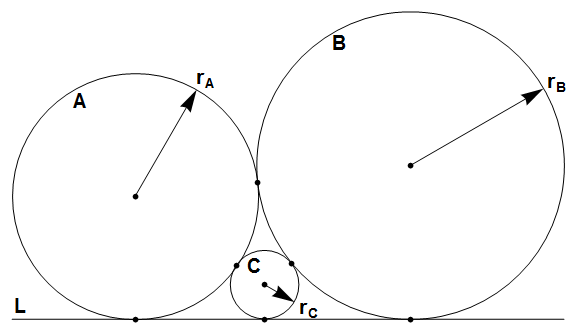

Circles $A$ and $B$ are tangent to each other and to line $L$ at three distinct points.
Circle $C$ is inside the space between $A$, $B$ and $L$, and tangent to all three.
Let $r_A$, $r_B$ and $r_C$ be the radii of $A$, $B$ and $C$ respectively.

Let $S(n) = \sum r_A + r_B + r_C$, for $0 \lt r_A \le r_B \le n$ where $r_A$, $r_B$ and $r_C$ are integers. The only solution for $0 \lt r_A \le r_B \le 5$ is $r_A = 4$, $r_B = 4$ and $r_C = 1$, so $S(5) = 4 + 4 + 1 = 9$. You are also given $S(100) = 3072$.
Find $S(10^9)$.